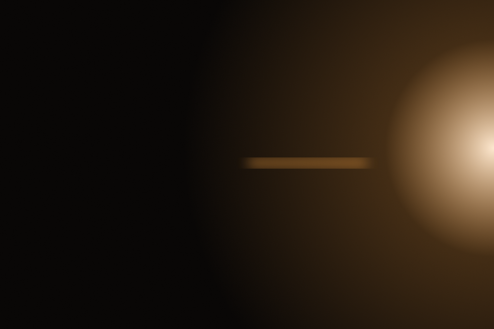

We wake you
before your stop.
We are counting the distance down while you sleep. One alarm lands eight minutes out. Nothing else does.

The night, as we keep it.
23:10
We start counting once the doors close.
01:20
The phone stays dark and we hold the distance.
04:52
Eight minutes out, we wake you once.
We only ever say six things.
- We are not holding anything for you yet.
- We are working out how long is left.
- We lost the count at 23:12. One tap starts it again.
- Nothing is reaching us out here. We keep counting anyway.
- We are pulling in now. That was the last of it.
- We are keeping the first night quiet on purpose.
Set it once and put it away.
Choose how long before the stop we should wake you.
Nine dollars, paid once. We do not sell anything else.